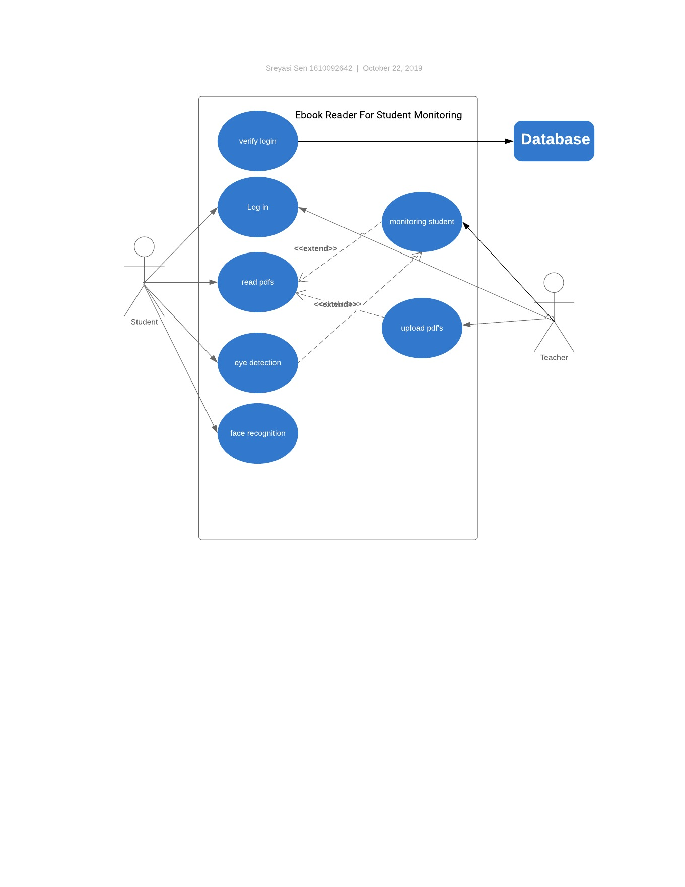

1.Introduction
1.1 Purpose
In the digital age, eBook reader apps have replaced conventional printed books. Now you can simply read your favorite book on your smartphone or tablet by downloading apps on your Android device. Several of the eBook apps even provide hundreds of free books. With these apps, you can quickly search for a book of your choice and start reading them right away. You no longer have to visit physical stores to buy books. But in our project, we are going to build eBook reading with the ability to monitor students by teachers. Teachers can upload their study materials as pdf and the students can read those pdfs. The interesting part is that the teachers will know how much that student read. Using the eye detection, the apps can monitor is the student is reading or not. This is the main features of our project.
1.2 Document Conventions
The document contains a few conventions such as-
Student: the user type which will read eBooks and read data.
Teacher: The user type that will be able to observe student’s activity through the software and upload eBooks/PDF
1.3 Intended Audience and Reading Suggestions
This document is intended for anyone in the development, managing and working for This software. The SRS contains product descriptions, interface requirements and other non-functional requirements. Readers are requested to read the SRS in the given sequence.
1.4 Product Scope
The purpose of this software to monitor the students and keep track of the student’s study. The teacher user will be able to upload eBook/PDF and monitor the activities of students such as how many pages the student has gone through and how much time they have studied. In order to check whether the reader is the intended student the software will run a face recognition of the reader. And also check whether the eye is open or not. The student will be able to read the eBooks/PDF file which will be uploaded into the software from the teachers. The student will also have their face data stored for recognition.
1.5 References
https://www.getomnify.com/use-case/soccer-scheduling-software
2.Overall Description
2.1 Product Perspective
This eReader application is a student’s tool for mastering reading assignments. This application offers an alternative reading methodology that makes reading focused and easy.
This is a virtual platform where, Teachers and students can be in here together at a time.
Teachers can sends PDFs to their studests and can customize the reading experience for each student and track their improvement over time.
By using this application, Teacher can easily monitor their students, while they are reading or not or how much time his/her students holds their consentration.
Removing the eye movements associated with traditional reading methods not only reduces the number of times your eyes move when reading, but also decreases the number of times your eyes must pass over a word for your brain to understand it. This makes extremely efficient, precise, convenient and comfortable.
2.2 Product Functions
Register here to use the website.
Teachers Can connect with other students through the account here.
Teachers can get notified about students inattentional activity.
Both Can create events, if they want! They also can invite others.
2.3 User Classes and Characteristics
There’ll be these classes.
User class, admin class
Characteristics:
User Class:
Search Teachers, Search Students.
Send friend request.
Teacher can sends PDFs, Student can read those.
Teachers can get notified about students inattentional activity.
Message others.
Create events.
Admin:
Full access to the website.
Can do crude everything.
2.4 Operating Environment
This is a web based application, which can be run on any device as long as it has internet connection and the web application server is up.
2.5 Design and Implementation Constraints
Backend coding will only be using python(django) and will be using mysql database (Mysqldb).
2.6 User Documentation
User will need to sign up to use the web application.
User will need to login.
User can see available students or teachers.
User can upload PDFs.
User can read PDFs
User can create events.
User can search for more users.
User can add other users.
User can chat with other users.
User (Teachers) can get notified about students inattentional activity.
User can log out.
2.7 Assumptions and Dependencies
List any assumed factors (as opposed to known facts) that could affect the requirements stated in the SRS. These could include third-party or commercial components that you plan to use, issues around the development or operating environment, or constraints. The project could be affected if these assumptions are incorrect, are not shared, or change. Also identify any dependencies the project has on external factors, such as software components that you intend to reuse from another project, unless they are already documented elsewhere (for example, in the vision and scope document or the project plan).
3.External Interface
3.1 User Interfaces
The main object will be to create a user friendly interface. We’ll be using html, css, bootstrap/ and for the backend we’ll be using python (framework -> Django)

The design has not been finalized yet but the basic concept will be
Registration page (where the user can register as students or teachers)
Login page (where the user can login, if the login is successful the user will be directed to the loading page else an error will pop up in the login page.)
Landing page (Some playground will be show and online users will be shown active, there’ll be a search bar to find PDFs which will redirected to the search user page, there will be a navigation bar with basic operations and a logout button which will redirect the user to the login page.)
Search PDFs (where the searched PDFs will be displayed, if not the closest thing will be displayed.)
Search User page (here people can search any other users. Where searched user will be displayed, if exist.)
3.2 Hardware Interfaces
This will temporarily be hosted in a local-host server but originally all we need is a server to store the application and a device connected with the internet to access.
3.3 Software Interfaces
This has not been implemented yet but we will be using.
Database -> mysql
DS -> any.
Tools -> HTML, CSS, bootstrap, PHP, Django, python, jinja2.
3.4 Communications Interfaces
The entire communication will take place inside the website via chat, all the messages will not be accessable without an active session.
4.System Feature
4.1 System Feature 1
Registration page, where the user can register as a student or as a teacher. (high priority)
4.1.2
Fill in the credentials.
Press the sign up buttons.
User will be signed up.
4.1.3
If any required credential is empty or wrong, then there will be error message.
4.2 System Feature 2 (and so on)
4.2.1
Login page (where the user can login, if the login is successful the user will be directed to the loading page else an error will pop up in the login page.) (High priority)
4.2.2
Fill in the credentials
Press the Log in buttons.
User will be logged in.
4.3
Landing page (A reader is reading type photo will be shown. Online users will be shown active. There’ll be a search bar to find teachers and students, which will redirected to the search user page, there will be a navigation bar with basic operations and a logout button which will redirect the user to the login page.) (High priority)
4.3.1
Search bar credential filled and clicked.
Redirected to the search teachers and student background.
4.4
Search PDF's Page (where the searched book will be displayed, if not, the closest thing will be displayed.) (Low priority)
4.5
Search User page (here people can search any other users. Where searched user will be displayed, if exist.) (Medium priority).
Add user.
Delete user.
4.6
AI (Medium priority).
AI will be used in the given PDF's, where user’s eye can be tracked. When a student will click his/her teachers PDFs, AI will count students eye movement through the devices camara. And all information will be sent his/her teacher, that how much time a student holds his/her consentration on that PDF's each page. Whenever a student moves his/her eyes from PDFs page, teacher will get notified.
In order to assess the performance of a system the following
must be clearly specified:
Response Time (The application should load in less than
0.1second at all time)
Workload (The system should be capable of supporting
80,000 users)
Scalability
Platform
5.2 Safety Requirements
The necessary data will be stored in another database or file in case of emergency. If there is a loss/damage/harm to the web application, the important data can be found in the secondary database.
5.3 Security Requirements
Core Security Requirement:
Confidentiality
Integrity
Availability
Authentication
Authorization
Accountability
General Security Requirement:
Session Management
Error Management
Configuration Management
Operational Security Requirement:
Deployment Environment
Archiving
Anti-Piracy
Secure this software to protect information of all users like, user
email address, pdf file, password, hacker etc.
It should be strong and efficient.
5.4 Software Quality Attributes
This software needs Reliability, Adequacy, Learnability,
Robustness, Maintainability, Readability, Extensibility, Testability,
Efficiency (time, storage, transmission channels, and peripherals).
5.5 Business Rules
Register is must then keep a unique id both teacher and student.
A teacher can add students by creating different section and can
commit pdf at individual system. Student can send request
specific teacher by searching teacher’s id. This software provides
student portal and teacher portal. It helps reducing time wasting
for students and easy to monitor a student for teacher. It will
ensure reading time by tracking student’s eyes.
6.Other Requirements
There will be
Use case diagram.
ER diagram (Mysql database).
Class diagram.